judge_right_D_wrong：train_12271.png 单元 16，标签 0，判断器 -0.3686，D 0.0381。视觉原因待人工填写。
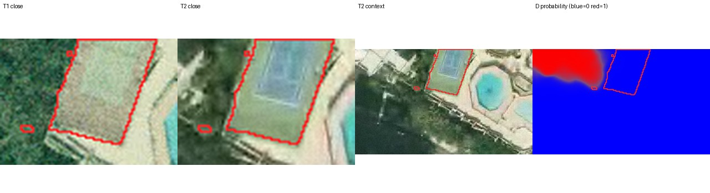
红色轮廓为过滤后的新增区域。阈值按各自验证集加权二分类 F1 最大值选择；正例权重=负例数/正例数。
人工分类填写 annotations.csv：认错地物 / 季节或色调 / 配准错位 / 真值可疑 / 太小看不清 / 其他。category 和 explanation 留空等待审核。
{"judge_right_D_wrong": {"available": 594, "selected": 12}, "judge_wrong_D_right": {"available": 1168, "selected": 12}}
judge_right_D_wrong：train_12271.png 单元 16，标签 0，判断器 -0.3686，D 0.0381。视觉原因待人工填写。

judge_right_D_wrong：train_13385.png 单元 46，标签 0，判断器 0.0233，D 0.0188。视觉原因待人工填写。
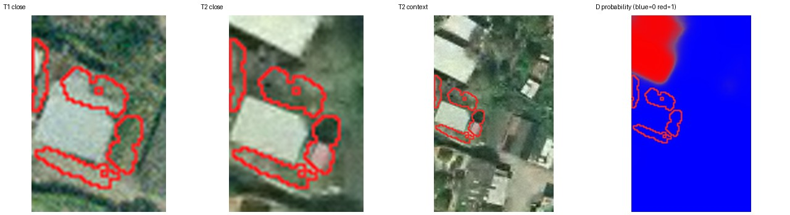
judge_right_D_wrong：train_14298.png 单元 42，标签 0，判断器 -0.6669，D 0.0116。视觉原因待人工填写。
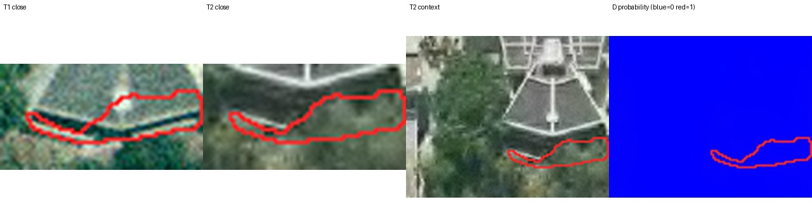
judge_right_D_wrong：train_13600.png 单元 36，标签 0，判断器 -0.4491，D 0.0590。视觉原因待人工填写。
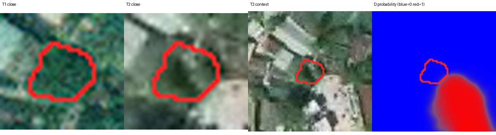
judge_right_D_wrong：train_15109.png 单元 11，标签 0，判断器 -0.0202，D 0.0103。视觉原因待人工填写。
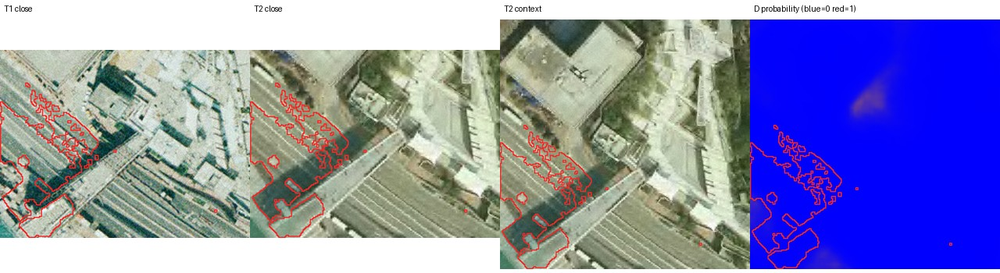
judge_right_D_wrong：train_12615.png 单元 2，标签 0，判断器 -0.1061，D 0.0165。视觉原因待人工填写。
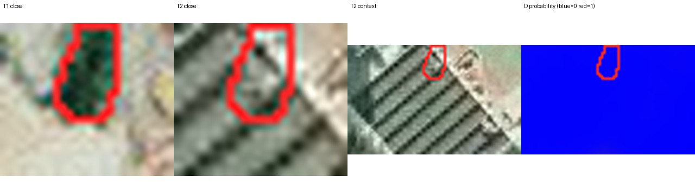
judge_right_D_wrong：train_13994.png 单元 36，标签 0，判断器 -0.1724，D 0.0113。视觉原因待人工填写。
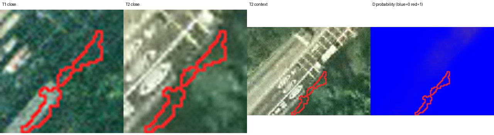
judge_right_D_wrong：train_15467.png 单元 7，标签 0，判断器 -0.0974，D 0.0323。视觉原因待人工填写。
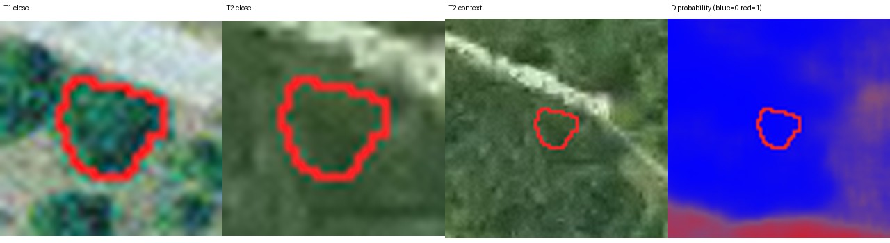
judge_right_D_wrong：train_12262.png 单元 17，标签 0，判断器 -0.2787，D 0.0246。视觉原因待人工填写。
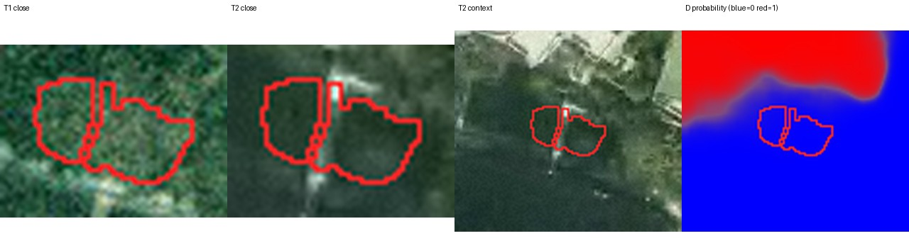
judge_right_D_wrong：train_14575.png 单元 22，标签 0，判断器 -0.0451，D 0.0092。视觉原因待人工填写。
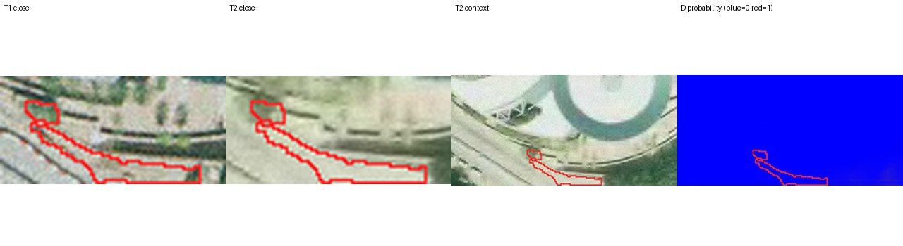
judge_right_D_wrong：train_13621.png 单元 6，标签 0，判断器 -1.3418，D 0.0095。视觉原因待人工填写。
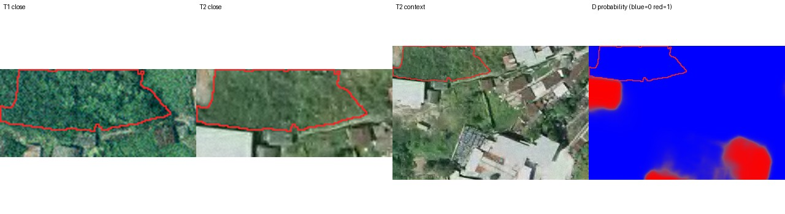
judge_right_D_wrong：train_14109.png 单元 48，标签 0，判断器 -0.2204，D 0.0436。视觉原因待人工填写。
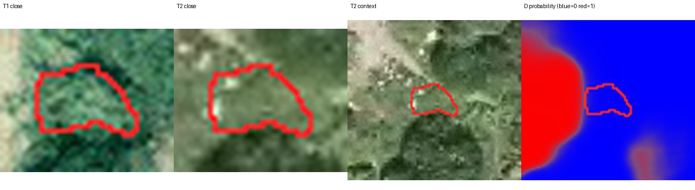
judge_wrong_D_right：train_14292.png 单元 0，标签 0，判断器 0.2564，D 0.0007。视觉原因待人工填写。
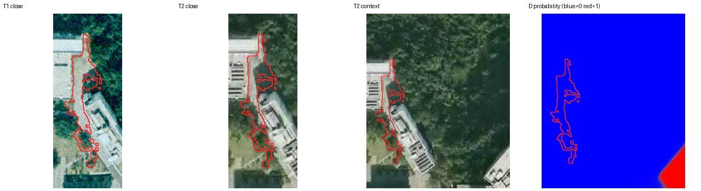
judge_wrong_D_right：train_14296.png 单元 44，标签 0，判断器 0.7177，D 0.0070。视觉原因待人工填写。
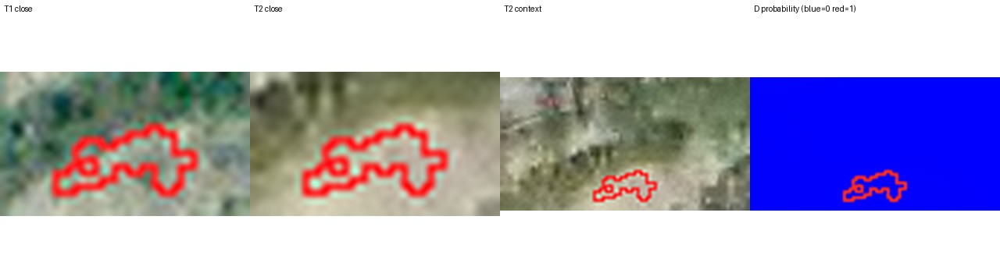
judge_wrong_D_right：train_15779.png 单元 2，标签 0，判断器 0.3918，D 0.0057。视觉原因待人工填写。
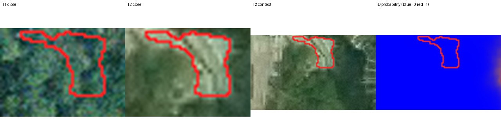
judge_wrong_D_right：train_13311.png 单元 0，标签 0，判断器 0.2323，D 0.0043。视觉原因待人工填写。
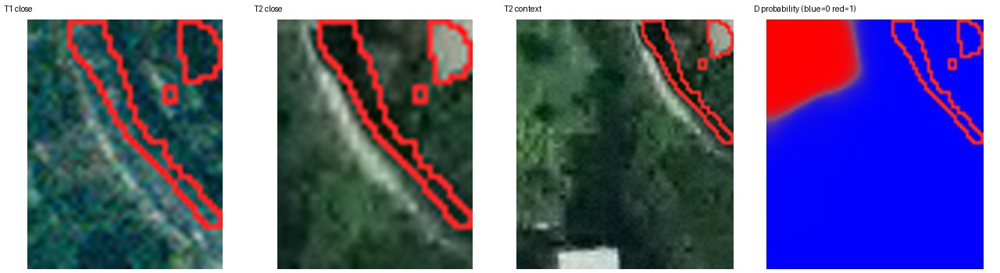
judge_wrong_D_right：train_14298.png 单元 21，标签 0，判断器 0.1892，D 0.0017。视觉原因待人工填写。
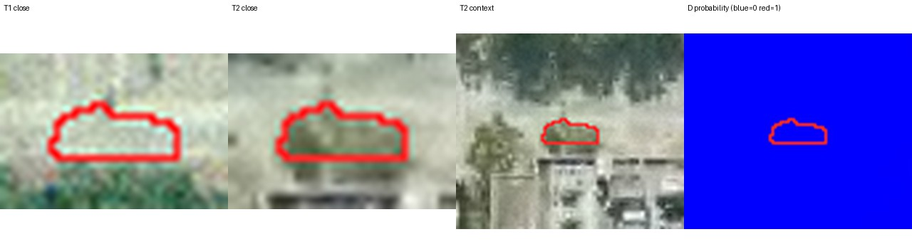
judge_wrong_D_right：train_14024.png 单元 1，标签 0，判断器 0.3042，D 0.0010。视觉原因待人工填写。
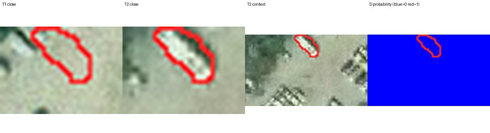
judge_wrong_D_right：train_15057.png 单元 48，标签 0，判断器 0.4335，D 0.0059。视觉原因待人工填写。
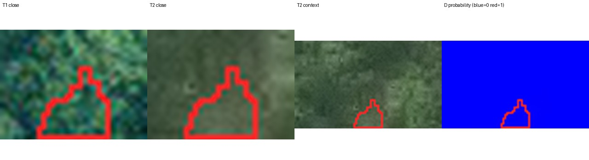
judge_wrong_D_right：train_12267.png 单元 37，标签 0，判断器 0.1767，D 0.0022。视觉原因待人工填写。
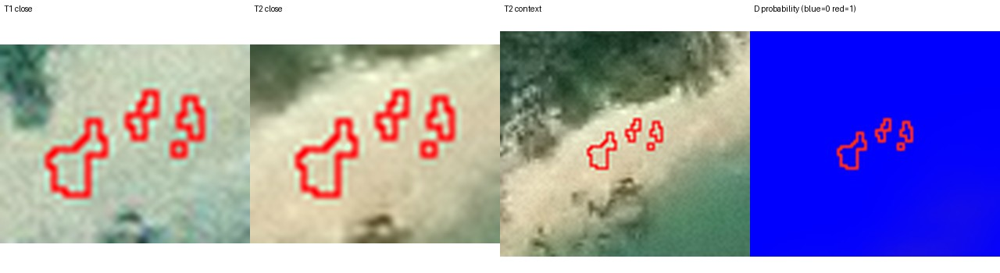
judge_wrong_D_right：train_12618.png 单元 41，标签 0，判断器 0.6477，D 0.0061。视觉原因待人工填写。
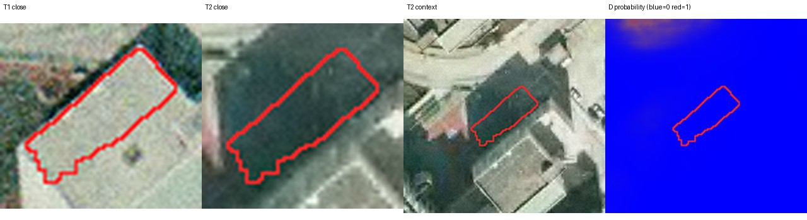
judge_wrong_D_right：train_15727.png 单元 23，标签 0，判断器 0.0960，D 0.0027。视觉原因待人工填写。
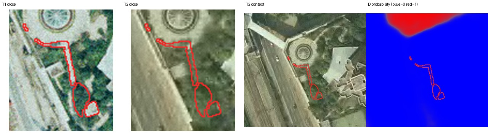
judge_wrong_D_right：train_13384.png 单元 0，标签 0，判断器 0.4121，D 0.0045。视觉原因待人工填写。
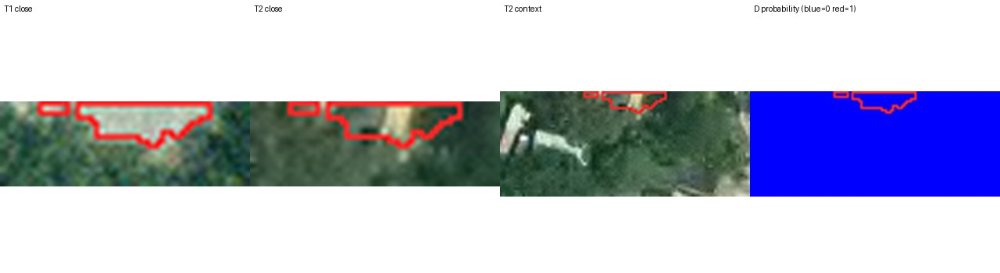
judge_wrong_D_right：train_13609.png 单元 90，标签 0，判断器 0.4925，D 0.0004。视觉原因待人工填写。
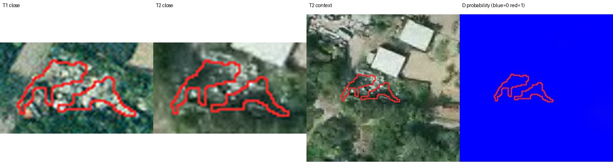